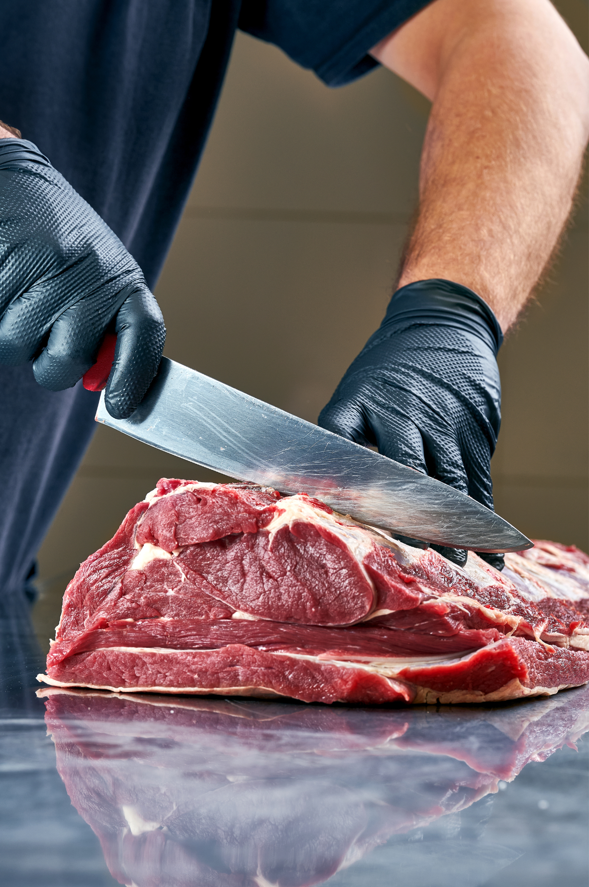
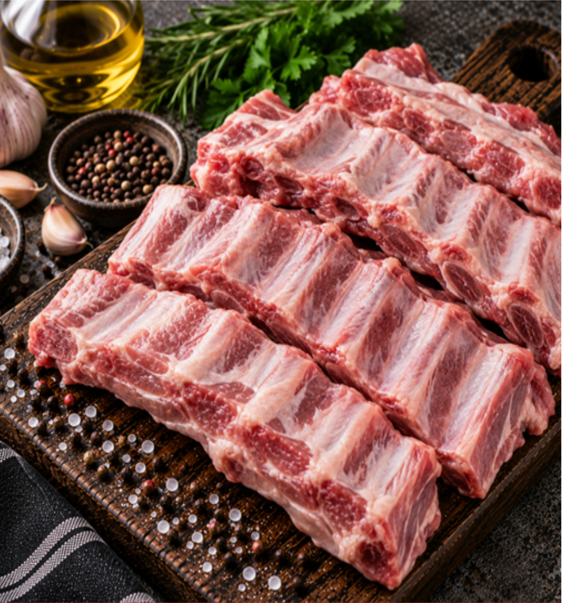
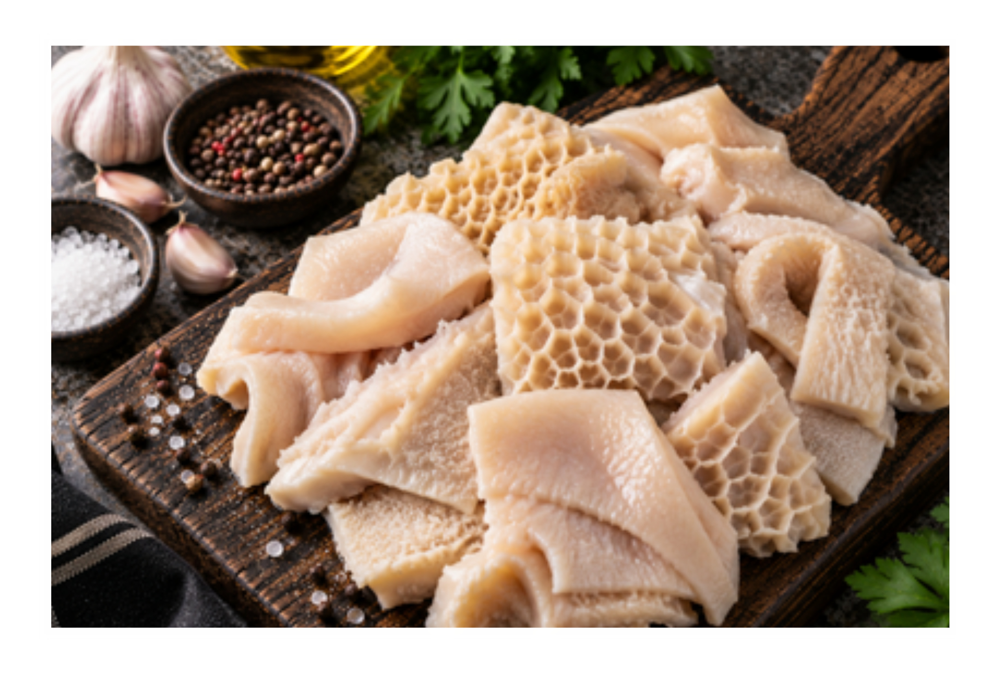

En C de Carnes somos una empresa dedicada a la producción, comercialización y distribución de carne de res, cerdo y pollo, comprometida con ofrecer productos de alta calidad, frescos, seguros y confiables.
COMPRAR AHORAEn C de Carnes integramos diferentes etapas de la cadena para ofrecer una experiencia de compra basada en: Origen + Calidad + Trazabilidad + Salubridad + Empaque + Transporte + Confianza. Queremos que nuestros clientes tengan la tranquilidad de saber que detrás de cada pedido existe un proceso responsable y controlado.
Tenemos ganado propio de res, cerdo y pollo. Por eso podemos controlar de principio a fin y garantizar la mejor calidad en cada corte de carne.



Desde nuestros animales hasta tu mesa, trabajamos para que cada producto conserve los estándares de calidad que nuestros clientes esperan.
Selección y bienestar del ganado.
Corte y manejo controlado.
Trazabilidad y verificación.
Conservación, cadena de frío y transporte.
La mejor carne que he probado. Los cortes de res siempre están frescos y su sabor es espectacular. ¡Totalmente recomendados!
Excelente servicio y calidad inmejorable. El cerdo que venden aquí hace que mis asados sean los mejores del barrio.
Llevo meses comprando mis productos en C de Carne y nunca me decepcionan. La frescura y atención son de primera.